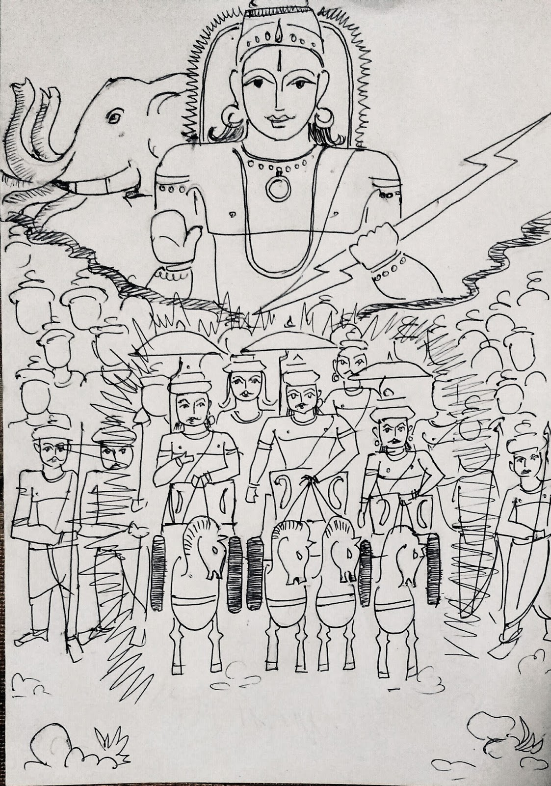

महावैश्वामित्रम् ...{Loading}...
ऋक्
RV.1.11.1a; SV.1.343a; 2.177a; VS.12.56a; 13.58a; 14.10a,22a,31a; 15.61a; 17.61a; TS.4.6.3.4a; 5.4.6.5; MS.2.10.5a: 137.9; 3.3.8: 41.3; KS.18.3a; 36.15a; 37.9a; AB.5.7.5; JB.3.34; KB.24.8; PB.11.11.4; ;SB.8.7.3.7; 9.2.3.20; TB.2.7.15.5a; 16.3a; AA.1.5.2.10; 5.3.1.2; A;S.7.8.3; 12.15; ;S;S.18.18.3; Ap;S.16.21.12; 17.14.9. P: indraM vishvAH ;S;S.11.11.12; 12.26.1; K;S.17.1.18; 18.3.21.
+++([सायणो ऽत्र। मधुच्छन्दःपुत्रो जेता। अनुष्टुभ्। इन्द्रः।])+++
इन्द्रं॒ विश्वा॑ अवीवृधन्त् +++(=अवर्धयन्)+++ समु॒द्रव्य॑चसं॒ +++(=समुद्रवद् व्याप्तवन्तम्)+++ गिरः॑ ।
र॒थीत॑मं र॒थीनां॒ वाजा॑नां॒ +++(=अन्नानाम्)+++ सत्प॑तिं॒ पति॑म् १
{kind=link}

RV.6.48.2d; SV.2.54d; VS.27.44d; MS.2.13.9d: 159.13; KS.39.12d; JB.1.177; 2.137; Ap;S.17.9.1d.
+++([सायणो ऽत्र। बृहस्पतिपुत्रः शंयुः। बृहती, सतोबृहती। अग्निः।])+++
य॒ज्ञाय॑ज्ञा वो अ॒ग्नये॑ गि॒रागि॑रा च॒ दक्ष॑से +++(=प्रवृद्धाय)+++ ।
प्र +++(पादपूरणे)+++ प्र॑ +++(पप्रिम् = दातारम् इति साम्नि)+++ व॒यम॒मृतं॑ जा॒तवे॑दसं
प्रि॒यं मि॒त्रं न+++(सु इति साम्नि)+++ शं॑सिषम् १
ऊ॒र्जो नपा॑तं॒ +++(=पुत्रम्)+++ +++(प्रशंसिषम्)+++ स हि॒न +++(=हि)+++ +अ॒यम्
अ॑स्म॒युर् +++(=अस्मान् कामयमानः)+++ दाशे॑म ह॒व्यदा॑तये +++(=हव्यदात्रे)+++ ।
भुव॒द् वाजे॑ष्व् +++(=युद्धेषु)+++ अवि॒ता भुव॑द् वृ॒ध +++(=वर्धकः)+++ उ॒त त्रा॒ता त॒नूना॑म् +++(=तनयानाम्)+++२

साम
- पारम्परिक-गान-मूलम् अत्र।
महा+++(“३)+++वैश्वामित्रम्।
{हया+++(“३)+++इ, हया+++(“३)+++अ, {ओ+++(”%)+++हा+++(३)+++}+++([त्रिः])+++आ}+++([त्रिः])+++।
इन्द्रव्ँ विश्वा+++(३)+++ह+++(v)+++। आवीवा+++(%)+++र्धा+++([प्रे])+++अन्।
समुद्रव्या+++(३)+++,चासङ् गा+++(”)+++इरा+++([प्रे])+++अह।
रथी+++([”]–%३)+++ईतमम्। राथा+++(")+++इना+++([“प्रे])+++अम्।
वा+++([”])+++जा+++(["])+++ना+++(["]३)+++अम् सा+++(३)+++त्अ,,पातिम् पा+++(%)+++ती+++([प्रे])+++इम्।
यज्ञा+++(["]“३)+++आयज्ञा। वो+++(“३)+++ अग्ना+++(%)+++या+++([प्रे])+++आइ ।
गि+++(इ)+++रा+++([”]–%३)+++ आगि+++(इ)+++रा+++([”])+++। चा दक्षा+++([ऽ]%)+++सा+++([प्रे])+++अइ ।
पप्री+++(–%३)+++इव्ँ व+++(वि)+++यममृतञ् जा,,तावे+++(["]“३)+++दा+++(%)+++सा+++([“प्रे])+++अम्।
प्रीयम् मित्रा+++(३)+++म्। सूशंसा+++(”)+++इ,षा+++([प्रे])+++अम्।
ऊ+++(“३)+++उर्जह। ना+++(%)+++पा+++([“प्रे])+++आ,,तन्
स हिना,, ऽयाम स्मा+++(%)+++यू+++([प्रे])+++उहु ।
दाशे+++([”]“३)+++एम ह,,व्यादा+++([“ऽ]३)+++,,ता+++(%)+++या+++([प्रे])+++अइ।
भुवत्,, वा+++(%)+++जा+++([प्रे])+++अइ,,ष्वविता।
भूवद्वा+++(%)+++र्धा+++([प्रे])+++अह।
उतत्रा+++(३)+++ता+++([”])+++अ, तानू+++(%)+++ना+++([प्रे])+++अम्।
उतत्रा+++([”]“३)+++अता। तानू+++(%)+++ना+++([प्रे])+++अम्।
{हया+++(“३)+++इ, हया+++(“३)+++अ, {ओ+++(”%)+++हा+++(३)+++}+++([त्रिः])+++आ}+++([त्रिः])+++।
{हो+++(”)+++ई+++(३)+++डा+++(“३)+++}+++([द्विः])+++। हो+++(”)+++ऒओ+++(%३)+++, ई+++(३)+++डा+++(” ३)+++अ ।